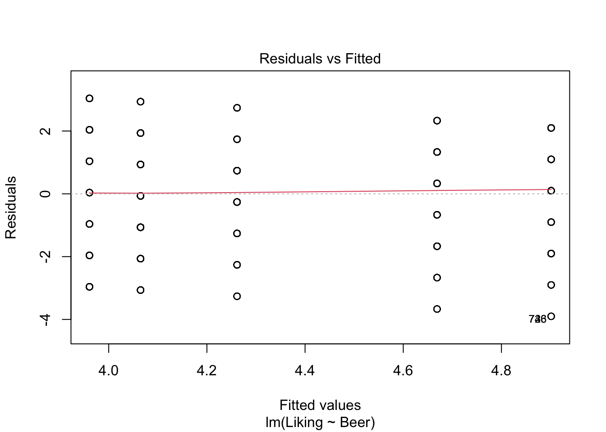
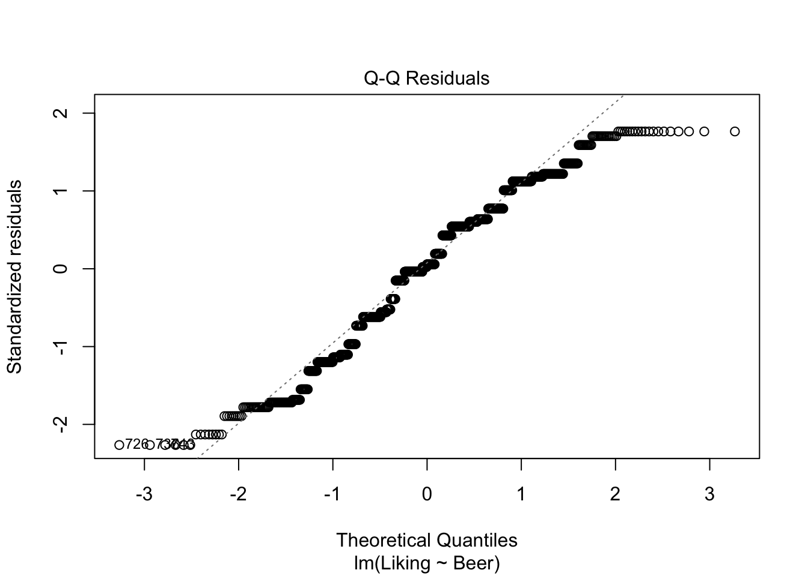
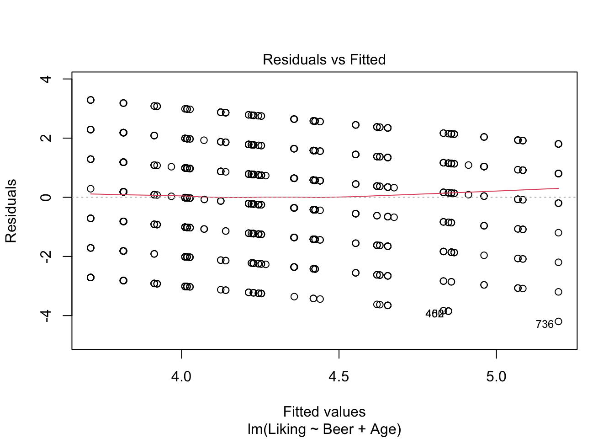
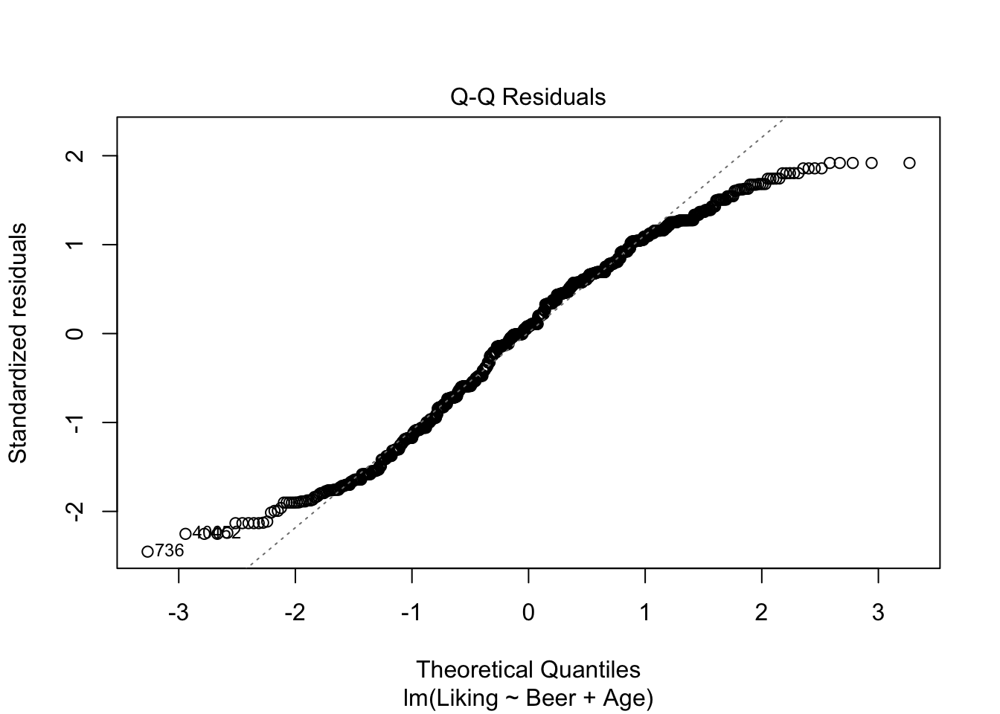
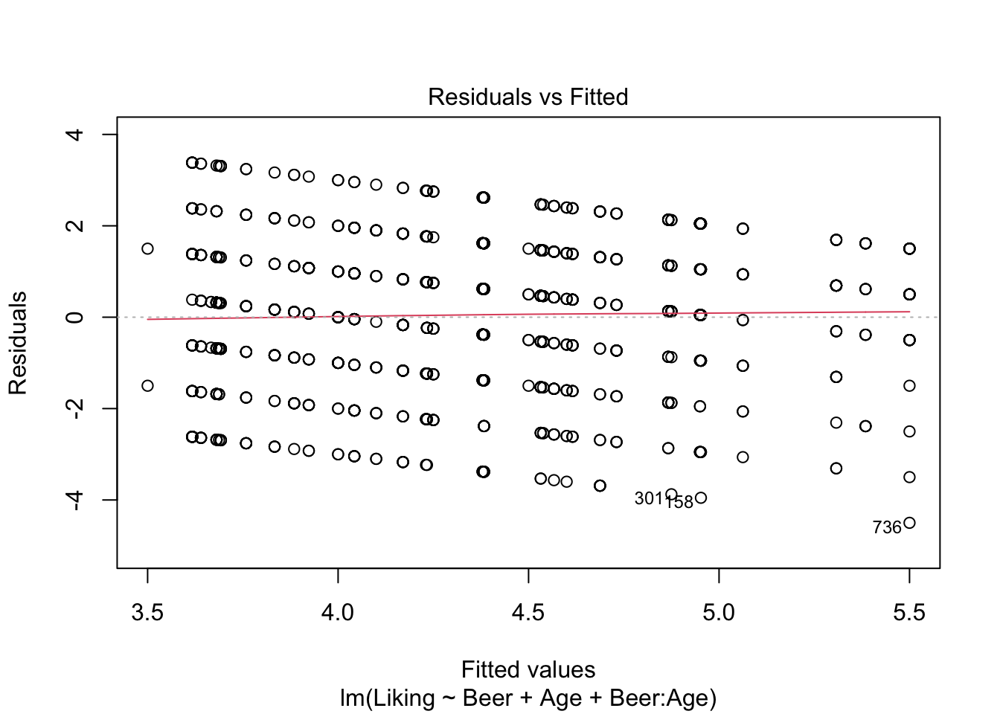
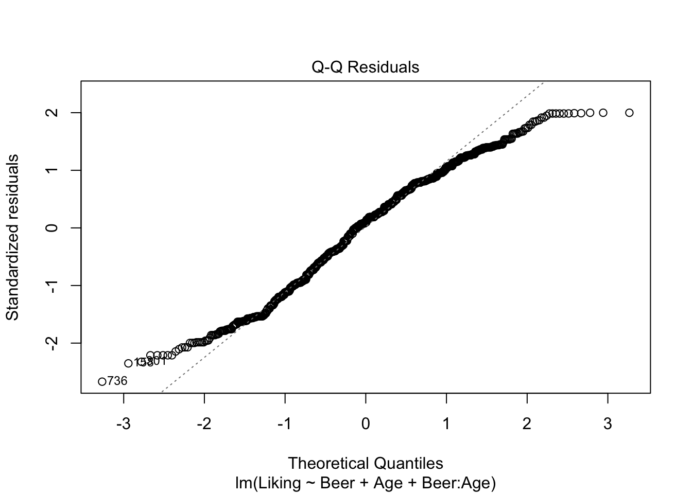
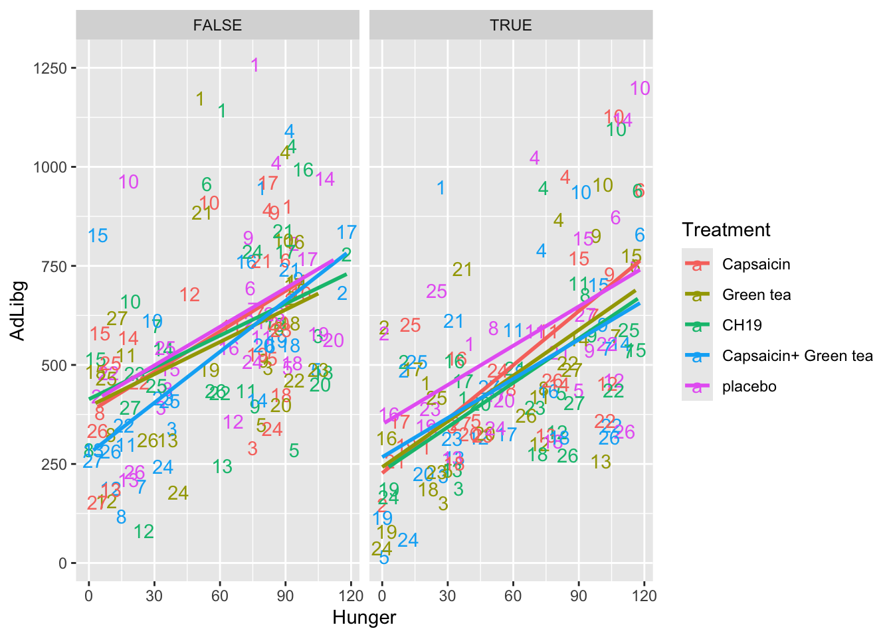

Chapter 6 Inferential statistics
6.1 Intro
Inferential statistics is a branch of statistics that deals with making predictions or estimates about a population based on a sample of data from that population. The goal of inferential statistics is to use the sample data to draw conclusions about the population as a whole.
This approach is quite neat, as it would be rather time-consuming to e.g. measure the height of every person in the whole world (the population), to be able to show the average height of a person. To avoid this, a (more or less) representative sample is used to estimate the average height of a person, while taking into account the uncertainty that arises from not measuring the whole population.
And while the process of obtaining a representative sample is a crucial aspect of inferential statistics, it is outside the scope of this book, and will therefore not be addressed further.
Inferential statistics use a variety of techniques such as hypothesis testing, confidence intervals or Analysis of Variance (ANOVA), all of which will be introduced in the following sections.
6.2 Hypothesis testing
Statistical hypothesis testing starts with a hypothesis about a population parameter (such as the mean or proportion). Then data are collected, after which statistical techniques are used to decide whether the data provide sufficient evidence to support the hypothesis or not.
There are two types of hypotheses in hypothesis testing: the null hypothesis and the alternative hypothesis. The null hypothesis is a statement of no effect or no difference between groups. It is typically denoted as \(H_{0}\). The alternative hypothesis is a statement of the opposite of the null hypothesis. It is typically denoted as \(H_{A}\) or \(H_{1}\).
The process of hypothesis testing typically involves the following steps:
Formulate the null and alternative hypotheses. For example: The average height of men and women is the same. \(H_{0}: \mu_{men}=\mu_{women} \\ H_{A}: \mu_{men}\neq\mu_{women}\)
Select a significance level (\(\alpha\)). This is the probability of making a Type I error, which means rejecting the null hypothesis when in fact, it is true (usually, \(\alpha = 0.05\) is used, but this can vary depending on the application).
Collect data and compute a test statistic (which test statistic will depend on the desired test - examples will be presented in the following sections).
Determine the p-value. The p-value is the probability of obtaining a test statistic at least as extreme as the one observed, assuming the null hypothesis is true.
Compare the p-value to the significance level. If the p-value is less than the significance level, we reject the null hypothesis. If the p-value is greater than the significance level, we fail to reject the null hypothesis.
It’s important to note that hypothesis testing is not about proving the hypothesis to be true or false. Instead, it’s about deciding whether the data provide sufficient evidence to reject the null hypothesis in favor of the alternative hypothesis.
A measure to evaluate whether the conclusion of the hypothesis test is valid, is called power, and will be introduced in the following section.
6.2.1 Power
Statistical power is a measure of the probability that a statistical test will detect a difference between two groups or treatments if one actually exists. It can also be described as the probability to NOT commit a Type II/\(\beta\)-error.
The statistical power of a hypothesis test is influenced by several factors, including the size of the sample, the magnitude of the difference between the groups or treatments being compared, and the level of significance (alpha) that is chosen for the test. A test with high statistical power is more likely to detect a difference between the groups or treatments being compared, while a test with low statistical power is less likely to detect a difference.
In practice, power can be hard to calculate, as one needs to know the characteristics of the distribution describing the alternative hypothesis (e.g. mean, standard deviation, etc.). These characteristics are unknown, but are sometimes estimated using previous trials dealing with similar samples to estimate the power of a trial.
6.3 Confidence intervals
A confidence interval is a range of values that is calculated from a sample of data, and it is used to estimate the true population parameter. It is called a confidence interval because it provides a level of confidence that the true population parameter falls within the range of values calculated from the sample.
The size of the confidence interval depends on the size of the sample, the level of confidence chosen, and the variability of the data. The larger the sample size and the lower the variability, the smaller the confidence interval will be. Confidence intervals are commonly used in statistical analysis to estimate the mean, standard deviation, and other parameters of a population.
Below is shown how to calculate the confidence interval of an estimated mean, assuming the the population follows a T-distribution. \[CI_{\mu}: \hat{\mu} \pm t_{1-\alpha/2,df} \cdot \hat{\sigma}/\sqrt{n}\] The t-fratcile can be found in a T-table, or using qt(1-\(\alpha\)/2,df) (which usually means qt(0.975, n-1)). \(\hat{\sigma}\) is the estimated standard deviation, and n is the number of samples used to calculate the mean.
The confidence interval can also be used in hypothesis testing. For example, let’s say that the average height of men is 180cm, with a 95% confidence interval of \(\pm10cm\). The null hypothesis is, that men and women have the same average height (\(\mu_{men} = \mu_{women}\)), whereas the alternative hypothesis is, that their average height is not the same (\(\mu_{men} \neq \mu_{women}\)).
If the height of women falls outside this confidence interval (meaning that the mean is larger than 190cm or lower than 170cm), one would be able to reject the null hypothesis, and conclude, that men and women do not have the same average height.
6.4 T-test
A T-test is a statistical test that is used to determine whether there is a significant difference between the means of two groups. It is commonly used to compare the means of two groups that have been sampled from a larger population, to see if the groups are significantly different from one another.
The hypotheses of a T-test: \[ H_{0}: \mu_{1}=\mu_{2} \\ H_{A}: \mu_{1}\neq\mu_{2}, \ \mu_{1}>\mu_{2} \ or \ \mu_{1}<\mu_{2}\] Which alternative hypothesis to choose depends on the question that one wants answered.
There are several types of T-tests, including the independent samples T-test and the paired samples T-test. The independent samples T-test is used to compare the means of two separate groups, while the paired samples T-test is used to compare the means of two related groups, such as before and after measurements.
To conduct a T-test in R, you can use the t.test() function. This function takes the following arguments:
x and y: These are the two groups that you want to compare. They can be vectors or data frames.
alternative: This specifies the alternative hypothesis. You can choose between “two.sided” (the default), “greater”, or “less”.
mu: This specifies the hypothesized mean difference between the two groups. By default, it is set to 0.
paired: This should be set to TRUE if you are conducting a paired samples t-test. Default is FALSE.
var.equal: Can be TRUE or FALSE, depending on whether or not the variances of the two groups can be treated as equal. Default is FALSE.
conf.level: The confidence level of choice. Default is 0.95.
Here is an example using the BuffetSurvey data set:
library(data4consumerscience)
data(pasta)
t.test(x = pasta$Pasta_with_legumes_is_visually_appealing,
y = pasta$Pasta_with_mushrooms_is_visually_appealing)##
## Welch Two Sample t-test
##
## data: pasta$Pasta_with_legumes_is_visually_appealing and pasta$Pasta_with_mushrooms_is_visually_appealing
## t = -3.0654, df = 103.39, p-value = 0.002774
## alternative hypothesis: true difference in means is not equal to 0
## 95 percent confidence interval:
## -1.152872 -0.247128
## sample estimates:
## mean of x mean of y
## 5.5 6.2This results in a p-value of 0.036, which is below the chosen \(\alpha\)-level of 0.05. This means, that there is a significant difference between how visually appealing pasta with legumes and pasta with mushrooms perceived.
6.5 F-test
An F-test is a statistical test that is used to compare the variance of two populations or samples. It is often used to test whether two groups have the same variance, or whether the variance of one group is significantly larger or smaller than the variance of another group.
The hypotheses of an F-test: \[ H_{0}: var_{1}=var_{2} \\ H_{A}: var_{1}\neq var_{2}, \ var_{1}>var_{2} \ or \ var_{1}<var_{2}\]
To conduct an F-test in R, you can use the var.test() function. This function takes two numeric vectors as input, and returns the F-value and p-value of the test.
Here is an example using the BuffetSurvey data set:
library(data4consumerscience)
data(pasta)
var.test(x = pasta$Pasta_with_legumes_is_visually_appealing,
y = pasta$Pasta_with_mushrooms_is_visually_appealing)##
## F test to compare two variances
##
## data: pasta$Pasta_with_legumes_is_visually_appealing and pasta$Pasta_with_mushrooms_is_visually_appealing
## F = 2.2049, num df = 59, denom df = 59, p-value = 0.002828
## alternative hypothesis: true ratio of variances is not equal to 1
## 95 percent confidence interval:
## 1.317018 3.691228
## sample estimates:
## ratio of variances
## 2.204861The p-value of the F-test is 0.037, which is below the chosen \(\alpha\)-level of 0.05. This means, that the variance of the scores for how visually appealing pasta with legumes is significantly different from variance of the scores for how visually appealing pasta with mushrooms. - This actually confirms, that the correct T-test was used in the section above, since the T-test with unequal variance was used.
While it is nice to use the F-test on two groups of samples, another very important statistical method uses the F-test to calculate its p-values - the ANOVA or Analysis of Variance, which will be introduced in the following section.
6.6 Analysis of Variance (ANOVA)
ANOVA (Analysis of Variance) is a statistical method used to test the equality of means among more than two groups. But instead of directly comparing the observed means of the groups (which would lead to multiple tests), one can use get away with one test analyzing variance (hence the name).
This is done by comparing the variance BETWEEN groups to the variance WITHIN groups. If the variance between the groups is significantly larger than the variance within the groups, we can conclude, that the mean of at least one of the groups is significantly different from the rest. To test whether the variances differ significantly, an F-test is used to compare the variances. If the p-value is below the selected \(\alpha\)-level (often \(\alpha\)=0.05)
As hypotheses, it looks like this (k is the number of groups): \[ H_{0}: \mu_{1}=\mu_{2} = ... =\mu_{k} \\ H_{A}: At \ least \ one \ mean \ is \ different \] ANOVA can be performed using one-way ANOVA, multiple-way ANOVA, depending on the application, which can be seen below.
6.6.1 One-way ANOVA
In a one-way ANOVA, we analyze the effect of one categorical factor on a response. This could e.g. be if country of origin has an impact on the alcohol content of the wine produced in that country, or if your dietary preference has an impact on your body weight. When conducting a one-way ANOVA, the model looks like this: \[ Y_{ij} = \mu + \alpha(A_{i}) + e_{ij} \\ where \ e_{ij} \sim \mathcal{N}(0,\sigma^{2}) \ and \ independent \\ for \ j=1,...,n_{i} \ and \ i=1,...,k \] Here, \(Y_{ij}\) represents the jth observation of the ith treatment level (i = 1 to k and j = 1 to \(n_i\)).This means, that e.g., \(Y_{23}\) represents the 3rd observation of the 2nd factor. \(\mu\) is the grand mean of the dataset, and \(\alpha\) is effect of the i-th level of our factor A (e.g. Argentina or France as wine-producing countries, or pescetarian as your dietary preference).
The ANOVA works, when the above-mentioned assumptions are true: The residuals (\(e_{ij}\)) are normally distributed around 0, and independent. A way to check the assumptions, is to use the built-in plot()-function in R, and look at whether the data are normally distributed using the QQ-plot, and looking at the residuals, to check if the assumptions are viable.
To show how to perform a one-way ANOVA in R, here is an example using the beerliking-dataset:
library(data4consumerscience)
data("beerliking")
model <- lm(data = beerliking, Liking ~ Beer)
plot(model,which = c(1,2))
anova(model)## Analysis of Variance Table
##
## Response: Liking
## Df Sum Sq Mean Sq F value Pr(>F)
## Beer 5 110.41 22.0818 7.3939 8.269e-07 ***
## Residuals 914 2729.64 2.9865
## ---
## Signif. codes: 0 '***' 0.001 '**' 0.01 '*' 0.05 '.' 0.1 ' ' 1First, the model is created using lm(), specifying the dataset used, and the dependent and independent variables (Liking and Beer, respectively)
The resulting table of the anova()-function is called an ANOVA-table, and contains a lot of information about the data. But the column that we are most often looking at is Pr(>F), which is another name for the p-value. If this value is below the chosen \(\alpha\)-level (often \(\alpha\)=0.05, which in this case it is), then we can conclude, that the judges like at least one of the Beers significantly better/worse than the rest.
6.6.2 Two-way ANOVA
As the name suggests, the two-way ANOVA includes two categorical factors in the model instead of one in one-way ANOVA, and compares both factors’ (and their interaction) effects on the response. This could be the effect of e.g. both the country of origin as well as the grape variety on the liking of wine.
For a two-way ANOVA with factor A with a levels, and factor B with b levels: \[ Y_{ijk} = \mu + \alpha(A_{i}) + \beta(B_{j}) + \gamma(A_{i}\times B_{j}) + e_{ijk} \\ where \ e_{ijk} \sim \mathcal{N}(0,\sigma^{2}) \ and \ independent \\ for \ i=1,...,a \ and \ j=1,...,b \ and \ k=1,...,n_{ij} \]
Here, \(Y_{ijk}\) represents the kth observation of the ith level of factor A, and jth level of factor B.This means, that e.g., \(Y_{234}\) represents the 4th observation of the 2nd level of A and the 3rd level of B. \(\mu\) is the grand mean of the dataset, \(\alpha\) is the effect of the ith level of factor A (e.g. Argentina or France as wine-producing countries), \(\beta\) is the effect of the jth level of factor B (e.g. Pinot Gris, Chardonnay, Riesling, etc.) and \(\gamma\) is the interaction effect between factor A and B (e.g. French Chardonnay or German Riesling).
As with the one-way ANOVA, the same assumptions about normality and independence of the residuals has to hold, and these can again be checked using plot() as shown below.
However, the anova()-function should be used with caution, when model have more than one independent variable. This is the case, because, anova() is performing what is commonly referred to as a Type I ANOVA, also called a sequential ANOVA, where the factors are tested in the specified order. Theoretically, this could be what you want, but in most cases we are interested in the effect of a factor, regardless of order.
This is called a Type II ANOVA, and in R it can be performed using drop1, as shown below in model2.
However, if an interaction effect is present (e.g. if the effect of Riesling is enhanced by the wine originating from Germany), then a Type II ANOVA only returns the effect of this interaction, due to the principle of marginality. This implies, that if an interaction is in fact present, the “simple” main effects (of e.g. country and grape alone) are poor estimators of the response. If the interaction is non-significant, however, it should be removed from the model, and we end up with a Type II model with the main effects.
If for some reason we are interested in both the main effects and the interaction (if the interaction effect is significant), we can perform what is called a Type III ANOVA. This will test all effects against a model without said effect. As this will over-parameterise the model, in R, one has to choose a contrasts setting that sums to zero, otherwise the ANOVA analysis will give incorrect results. This is what is done with options. Then model3 is created to also test the interaction, and in drop1() it is specified, that we want all model components to be tested (Type III ANOVA), using .~..
If there is no significant interaction effect, a Type II ANOVA is a stronger test, which is why one should choose it if possible.
More on the different types of ANOVA here and here.
library(data4consumerscience)
data(beerliking)
model2 <- lm(data = beerliking, Liking ~ Beer + Age)
plot(model2,which = c(1,2))
drop1(model2, test = 'F')## Single term deletions
##
## Model:
## Liking ~ Beer + Age
## Df Sum of Sq RSS AIC F value Pr(>F)
## <none> 2692.2 1011.8
## Beer 5 110.948 2803.1 1039.0 7.4841 6.784e-07 ***
## Age 6 37.493 2729.6 1012.5 2.1076 0.0501 .
## ---
## Signif. codes: 0 '***' 0.001 '**' 0.01 '*' 0.05 '.' 0.1 ' ' 1options(contrasts = c('contr.sum','contr.poly'))
model3 <- lm(data = beerliking, Liking ~ Beer + Age + Beer:Age)
plot(model3,which = c(1,2))
drop1(model3, .~., test = 'F')## Single term deletions
##
## Model:
## Liking ~ Beer + Age + Beer:Age
## Df Sum of Sq RSS AIC F value Pr(>F)
## <none> 2604.1 1041.2
## Beer 5 57.549 2661.6 1051.3 3.8807 0.001745 **
## Age 6 37.158 2641.2 1042.2 2.0880 0.052306 .
## Beer:Age 30 88.089 2692.2 1011.8 0.9900 0.482521
## ---
## Signif. codes: 0 '***' 0.001 '**' 0.01 '*' 0.05 '.' 0.1 ' ' 1It looks like we have no significant interaction effect, since the p-value = 0.48 > \(\alpha\) (0.05). This means, that we can look at the Type II-analysis. Here, it shows that Beer-type is very important for the Liking score, since the p-value = 6.784e-07, which is way lower than \(\alpha\). Age is very close to \(\alpha\), which suggests, that even though the effect is technically non-significant, it might be worth looking into whether all ages like beer the same.
6.6.3 Post hoc test - Tukey’s Honest Significant Difference
After the ANOVA, we might have concluded, that at least one of the groups of at least one of the factors is significantly different from the rest. Now you would like to know which one(s) of the groups this significant difference originates from.
This is where the Tukey’s Honest Significant Difference (in short, Tukey test) is very useful.
To compare more than two groups, one would have to conduct multiple pairwise T-tests. This does, however, not hold up, as probabilities are cumulative, which means that while the first test would yield a p-value lower than \(\alpha\) (often 0.05), when conducting multiple tests, the cumulative p-value could exceed \(\alpha\).
A Tukey test corrects for this, and is therefore a better fit when dealing with more than two groups.
There are several ways to conduct a Tukey test in R, but the one that works in most usecases is the one shown below, using the multcomp-package and the glht()-function. The dataset used here is the beerliking-dataset.
library(multcomp)
library(data4consumerscience)
data("beerliking")
beerliking$Beer <- as.factor(beerliking$Beer)
model <- lm(data = beerliking, Liking ~ Beer)
summary(glht(model, linfct = mcp(Beer = "Tukey")))##
## Simultaneous Tests for General Linear Hypotheses
##
## Multiple Comparisons of Means: Tukey Contrasts
##
##
## Fit: lm(formula = Liking ~ Beer, data = beerliking)
##
## Linear Hypotheses:
## Estimate Std. Error t value Pr(>|t|)
## NY Lager - Brown Ale == 0 -6.399e-01 1.979e-01 -3.233 0.01594 *
## Porse Bock - Brown Ale == 0 -8.364e-01 1.976e-01 -4.233 < 0.001 ***
## Ravnsborg Red - Brown Ale == 0 -2.325e-01 1.976e-01 -1.177 0.84802
## River Beer - Brown Ale == 0 -8.364e-01 1.976e-01 -4.233 < 0.001 ***
## Wheat IPA - Brown Ale == 0 -9.405e-01 1.979e-01 -4.752 < 0.001 ***
## Porse Bock - NY Lager == 0 -1.965e-01 1.973e-01 -0.996 0.91921
## Ravnsborg Red - NY Lager == 0 4.074e-01 1.973e-01 2.065 0.30661
## River Beer - NY Lager == 0 -1.965e-01 1.973e-01 -0.996 0.91922
## Wheat IPA - NY Lager == 0 -3.007e-01 1.976e-01 -1.522 0.65035
## Ravnsborg Red - Porse Bock == 0 6.039e-01 1.969e-01 3.066 0.02693 *
## River Beer - Porse Bock == 0 -2.831e-15 1.969e-01 0.000 1.00000
## Wheat IPA - Porse Bock == 0 -1.042e-01 1.973e-01 -0.528 0.99506
## River Beer - Ravnsborg Red == 0 -6.039e-01 1.969e-01 -3.066 0.02704 *
## Wheat IPA - Ravnsborg Red == 0 -7.080e-01 1.973e-01 -3.589 0.00458 **
## Wheat IPA - River Beer == 0 -1.042e-01 1.973e-01 -0.528 0.99506
## ---
## Signif. codes: 0 '***' 0.001 '**' 0.01 '*' 0.05 '.' 0.1 ' ' 1
## (Adjusted p values reported -- single-step method)cld(glht(model, linfct = mcp(Beer = "Tukey")))## Brown Ale NY Lager Porse Bock Ravnsborg Red River Beer Wheat IPA
## "a" "bc" "c" "ab" "c" "c"When inserting the glht()-object into summary(), the individual, pairwise comparisons are shown, with the adjusted p-values.
Another (sometimes easier to interpret) way of displaying the pairwise comparison is by the use of letters, as is shown using cld(). When groups have different letter, they are significantly different from one another, while groups sharing a letter means no significant difference between the two. Here, we can see, that Brown Ale has scored significantly higher than Wheat IPA, since they have been assigned with c and a respectively. But the Brown Ale is not significantly different from the Ravnsborg Red, as they both have been assigned with a’s.
6.7 Introduction to linear and mixed models
Linear models are one of the most used statistical methods. The definition is that the response is linear in the parameters. This means, that it one can see it as an extention of the ANOVA-models already described, but with the independent variable now being continuos rather than categorical. If \(y\) is the response, and \(x\) is the predictor, then both of the models below are linear models
\[y = a + b\cdot x + e\]
\[y = a + b\cdot x + c\cdot x^2 + e\] Here you see that the response is linear in the parameters \(a,b,c\). I.e. it has nothing to do with being linear in the predictor.
6.8 Normal and Mixed models
6.8.1 Normal model
In a normal linear model such as:
\[y = a + b\cdot x + e\]
The assumption is that the uncertainty is captured by one entry, namely the residuals (\(e\)).
For instance, the relation between Hunger and the intake AdLibg of dishes with Capsaicin can be visualized and modeled by the code below.
First, we load the data from the data4consumerscience-package as well as the line data('chili') , and load the tidyverse-package, to be able to manipulate the data as well as plot them.
The code uses the pipe operator %>% to chain together a series of data manipulation steps using the dplyr-package from the tidyverse.
filter(Treatment=='Capsaicin') filters the dataset to include only rows where the Treatment column has the value Capsaicin.
filter(!duplicated(Judge)) filters out duplicated rows based on the Judge column.
This creates a new data.frame, which is assigned to the name x.
The next chuck of code creates the plot, using the ggplot() function.
The data argument is set to the filtered dataset x, and aesthetics (aes()) mappings are defined:
- x = Hunger: The x-axis is mapped to the Hunger column in the dataset.
- y = AdLibg: The y-axis is mapped to the AdLibg column in the dataset.
geom_point() adds individual points to the plot, where each point represents a combination of Hunger and AdLibg values from the dataset.
stat_smooth(method = lm, se = F) adds a smoothed regression line to the plot using linear regression (method = lm). The se = F argument indicates that the standard error around the regression line should not be displayed.
library(tidyverse)
library(data4consumerscience)
data('chili')
x <- chili %>% # only include a single treatment
filter(Treatment=='Capsaicin') %>% # only include the first trial for each judge
filter(!duplicated(Judge))
ggplot(data = x, aes(x = Hunger, y = AdLibg)) +
geom_point() +
stat_smooth(method = lm, se = F)
Naturally, the more hungry, the higher the intake.
A model describing this relation is shown below.
The first line of code uses the lm() function to fit a linear regression model.
mdl is the name given to the linear regression model that will be created.
data = x specifies, that x is the dataset used for the linear regression.
AdLibg ~ Hunger specifies the formula of the model. Here, AdLibg is the dependent variable and Hunger is the independent variable. The tilde (~) separates the dependent and independent variables.
The summary()-function is used to display information about the model mdl.
mdl <- lm(data = x, AdLibg~Hunger)
summary(mdl)##
## Call:
## lm(formula = AdLibg ~ Hunger, data = x)
##
## Residuals:
## Min 1Q Median 3Q Max
## -347.34 -106.69 -18.06 133.88 341.60
##
## Coefficients:
## Estimate Std. Error t value Pr(>|t|)
## (Intercept) 379.826 73.814 5.146 2.56e-05 ***
## Hunger 3.447 1.078 3.196 0.00375 **
## ---
## Signif. codes: 0 '***' 0.001 '**' 0.01 '*' 0.05 '.' 0.1 ' ' 1
##
## Residual standard error: 190.5 on 25 degrees of freedom
## Multiple R-squared: 0.2901, Adjusted R-squared: 0.2617
## F-statistic: 10.21 on 1 and 25 DF, p-value: 0.003753Here we see that consumption increases by \(3.45g\) per increase in \(1\) hunger scale, and that this slope has a standard error of \(1.08g\) (Estimate and Std. Error under Coefficients). Further, at Hunger=0 the intake is \(379.8g\). Further, we see that this relation is significant \(p = 0.0036\) (Pr(>|t|) under Coefficients).
More details on the use of linear models in R and how-to can be viewed in these videos:
6.8.2 Mixed model
A mixed model refers to the situation, where more than one part of the model is handling the uncertainty. For instance, in the chili data set there are two instances for each judge, and hence the uncertainty can be split into between judges and within judges.
In this plot the intake is shown across products (Treatment) and labelled with the Judge number. For instance, Judge 1 is in general high and 24 generally low. Further, the plot is splitted according to the two test-repetition (First: TestDays = 1,..,5, Second: TestDays = 6,..,10).
library(tidyverse)
ggplot(data = chili, aes(x = Hunger, y = AdLibg, color = Treatment)) +
geom_text(aes(label = Judge)) +
stat_smooth(method = lm, se = F) +
facet_wrap(~TestDay>5)
The above-mentioned structure is encoded in the modelling. lmer is used, when creating a mixed effect model. The judges and the test day are considered random effects, and are assigned to be so by adding a 1 and a horizontal line when creating the model.
library(lme4)
library(lmerTest)
chili$TestDay2 <- factor(chili$TestDay>5) # adding a new testday variable
mdlmix <- lmer(data = chili, AdLibg ~ Hunger*Treatment + (1|Judge) + (1|(TestDay2)))
summary(mdlmix)## Linear mixed model fit by REML. t-tests use Satterthwaite's method ['lmerModLmerTest']
## Formula: AdLibg ~ Hunger * Treatment + (1 | Judge) + (1 | (TestDay2))
## Data: chili
##
## REML criterion at convergence: 3414.4
##
## Scaled residuals:
## Min 1Q Median 3Q Max
## -2.78687 -0.60988 0.01365 0.51858 2.85224
##
## Random effects:
## Groups Name Variance Std.Dev.
## Judge (Intercept) 27011 164.35
## (TestDay2) (Intercept) 2974 54.53
## Residual 16870 129.89
## Number of obs: 269, groups: Judge, 27; (TestDay2), 2
##
## Fixed effects:
## Estimate Std. Error df t value Pr(>|t|)
## (Intercept) 352.28066 52.75937 3.16773 6.677 0.00576 **
## Hunger 2.92939 0.24957 238.99649 11.738 < 2e-16 ***
## Treatment1 -18.77367 31.47373 232.74410 -0.596 0.55143
## Treatment2 5.88641 30.88143 232.74962 0.191 0.84899
## Treatment3 -11.29847 33.80720 232.71363 -0.334 0.73853
## Treatment4 -17.75656 29.41156 232.57574 -0.604 0.54661
## Hunger:Treatment1 0.53290 0.45930 233.05709 1.160 0.24714
## Hunger:Treatment2 -0.35878 0.44660 233.00610 -0.803 0.42259
## Hunger:Treatment3 0.03973 0.46252 233.14079 0.086 0.93163
## Hunger:Treatment4 -0.28247 0.43373 232.88188 -0.651 0.51551
## ---
## Signif. codes: 0 '***' 0.001 '**' 0.01 '*' 0.05 '.' 0.1 ' ' 1
##
## Correlation of Fixed Effects:
## (Intr) Hunger Trtmn1 Trtmn2 Trtmn3 Trtmn4 Hng:T1 Hng:T2 Hng:T3
## Hunger -0.289
## Treatment1 -0.007 0.002
## Treatment2 -0.013 0.028 -0.220
## Treatment3 0.014 -0.018 -0.269 -0.262
## Treatment4 -0.033 0.081 -0.214 -0.198 -0.238
## Hngr:Trtmn1 -0.001 0.022 -0.865 0.192 0.229 0.194
## Hngr:Trtmn2 0.009 -0.012 0.196 -0.856 0.218 0.171 -0.239
## Hngr:Trtmn3 -0.004 -0.021 0.241 0.231 -0.881 0.208 -0.263 -0.253
## Hngr:Trtmn4 0.023 -0.041 0.192 0.169 0.193 -0.841 -0.247 -0.222 -0.233The summary spits out the model estimates, and especially the random effects shows that the within individual residual variation is \(130g\) while the between individual variation is larger: \(164g\). I.e. the consumption is more depend on the individual than the repetitions. Further, the testday also has a little effect (\(54g\)).
We can evaluate the systematic effect overall by anova. When anova is used on a model created by lmer, it conducts a Type III ANOVA.
anova(mdlmix)## Type III Analysis of Variance Table with Satterthwaite's method
## Sum Sq Mean Sq NumDF DenDF F value Pr(>F)
## Hunger 2324398 2324398 1 239.00 137.7801 <2e-16 ***
## Treatment 31278 7820 4 232.75 0.4635 0.7625
## Hunger:Treatment 33035 8259 4 233.05 0.4895 0.7434
## ---
## Signif. codes: 0 '***' 0.001 '**' 0.01 '*' 0.05 '.' 0.1 ' ' 1This shows that Hunger indeed will make you eat more, but the slopes and offsets in relation to the different products is non-significant.
To learn more and see how to conduct the analysis in R, see here: More on ANOVA and mixed models